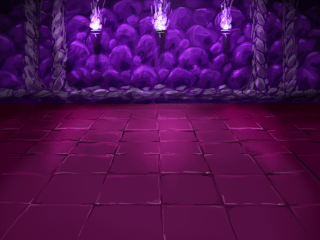

DARK DUNGEON
「暗黒のダンジョン」… それは、最も恐れられた魔物の巣窟、魔界の入り口。人間でこの暗黒のダンジョンに入り、帰ってきたものはほとんどいないという、凍てついた魔物の巣窟。このミッションでは、暗黒のダンジョンで魔物と戦い、ドラゴンの首を手に入れ、エメンタール王国の魔界進出を勇者として援護する。報酬には、15000万ルピナスが支払われ、魔剣も与られる。

DEATHLY CHAMBER
「死の王宮の間」… エメンタール王国と太古より対立してきた魔界。そこには死の王宮があり、魔界の王はエメンタール王国の領土を魔物で埋め尽くそうと戦争を繰り広げてきた。このミッションでは、魔界の王都にある死の王宮へ攻め入り、エメンタール王国兵士を率いて死の王宮の間にいる魔界の王を倒す。報酬には50000万ルピナスが支払われ、魔界の領土が与られる。